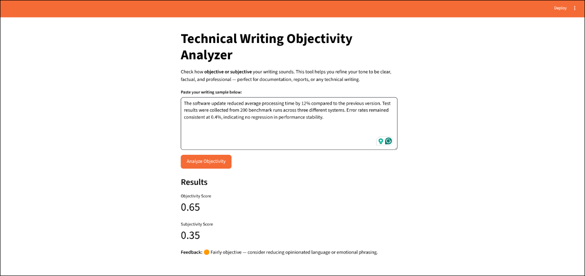
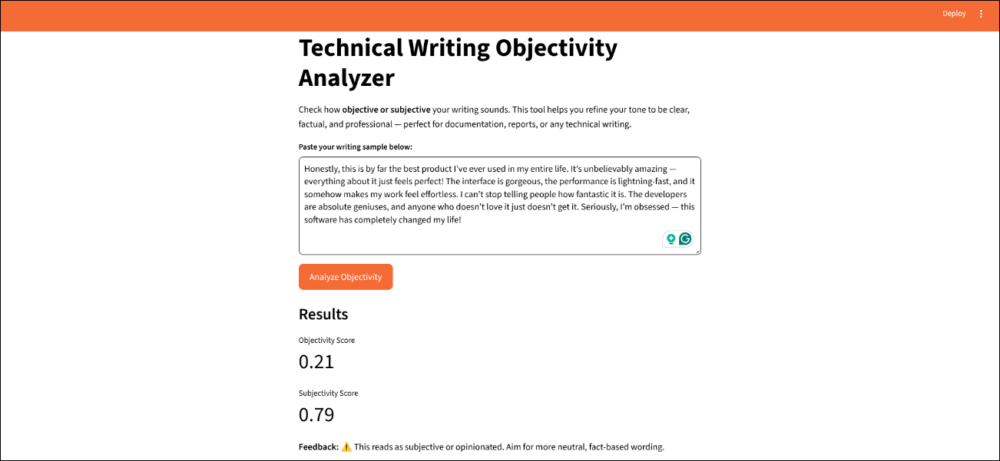

As a technical writer, I have often faced the challenge of ensuring that documentation remains clear, factual, and unbiased, especially when dealing with complex technologies or cross-functional audiences. During editing, I realized that identifying subjective or emotional language manually can be tedious and inconsistent. To explore how AI could assist writers in this area, I developed a lightweight web app that helps users evaluate how objective or subjective their writing sounds. It runs locally and is designed for anyone who wants to improve clarity and tone.
Writers often struggle to assess the tone of their own writing objectively. Even experienced professionals can unintentionally include emotional or opinion-based language, such as “I think” or “this is great,” which can undermine technical accuracy and reader trust.
Most existing AI tools for tone or sentiment analysis require cloud APIs, subscriptions, or complex configurations. These introduce privacy concerns and technical barriers, especially for writers who simply want a quick, offline way to check their text. I wanted to create something simple, transparent, and tailored to the needs of technical communicators.
I built the Technical Writing Objectivity Analyzer using Python, Streamlit, TextBlob, and a lot of troubleshooting help from Claude Code. Streamlit provides a clean, interactive interface, while TextBlob handles the natural language processing. Here is how it works:
Objectivity: Shows how factual or neutral the writing is. An example of a passage with a relatively high objectivity score of 0.65 (or 65%) is shown below. Meaning this passage is more objective than subjective.
\
Subjectivity: how much emotion or opinion the text expresses. An example of a passage with a relatively low objectivity score of 0.02 (or 20%) is shown below. Meaning that this passage is more subjective than objective.

Everything runs locally on the user’s machine. No data is sent online, and no API key is required. To support continuous improvement, I also integrated practical writing tips within the app. These suggestions help users rephrase emotional or vague statements into precise, evidence-based ones.
I use the Objectivity Analyzer occasionally when reviewing documentation, and while it is a helpful tool, it is not without its limitations. The feedback it provides is quick and useful, but it can sometimes oversimplify complex sentences or misinterpret context, especially when technical language includes terms that sound subjective but are not.
Despite these minor drawbacks, it offers valuable insights that traditional proofreading alone might miss. By surfacing tone-related issues quickly, the tool helps writers maintain technical accuracy, reader trust, and a professional tone. More importantly, it demonstrates how AI can assist rather than replace the writer, reinforcing the balance between automation and human judgment in documentation workflows.